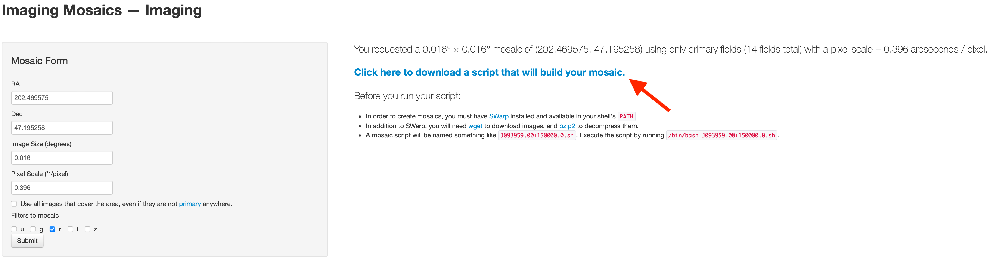
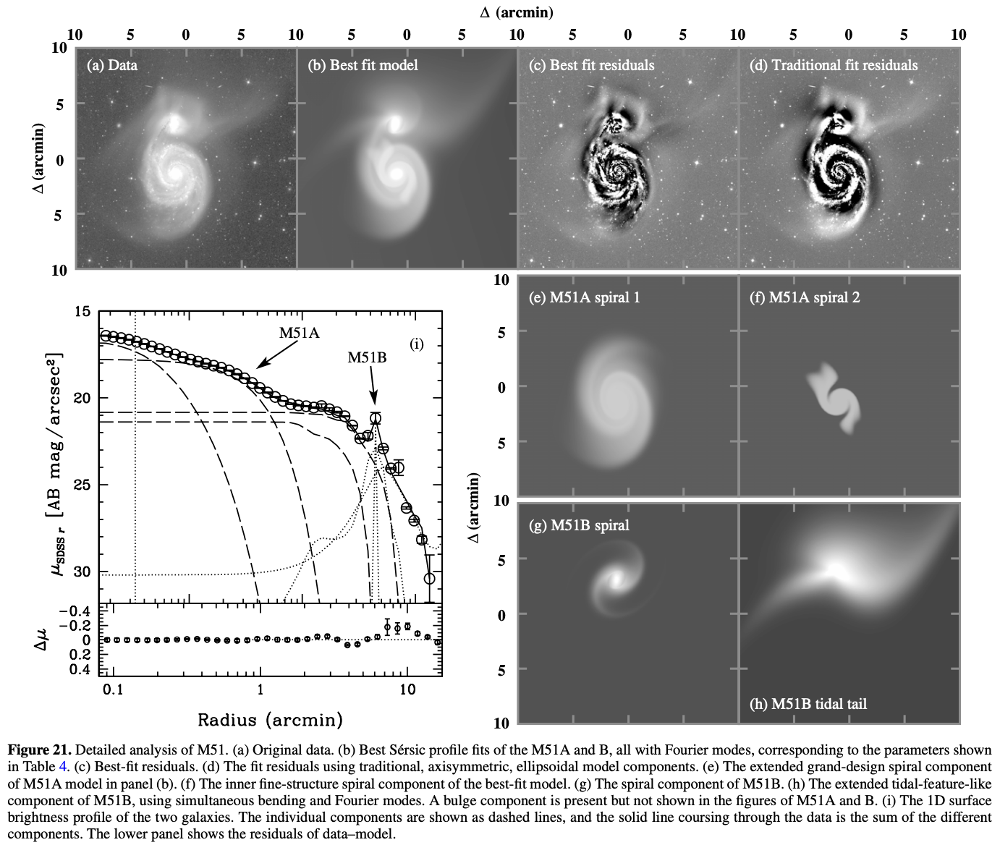
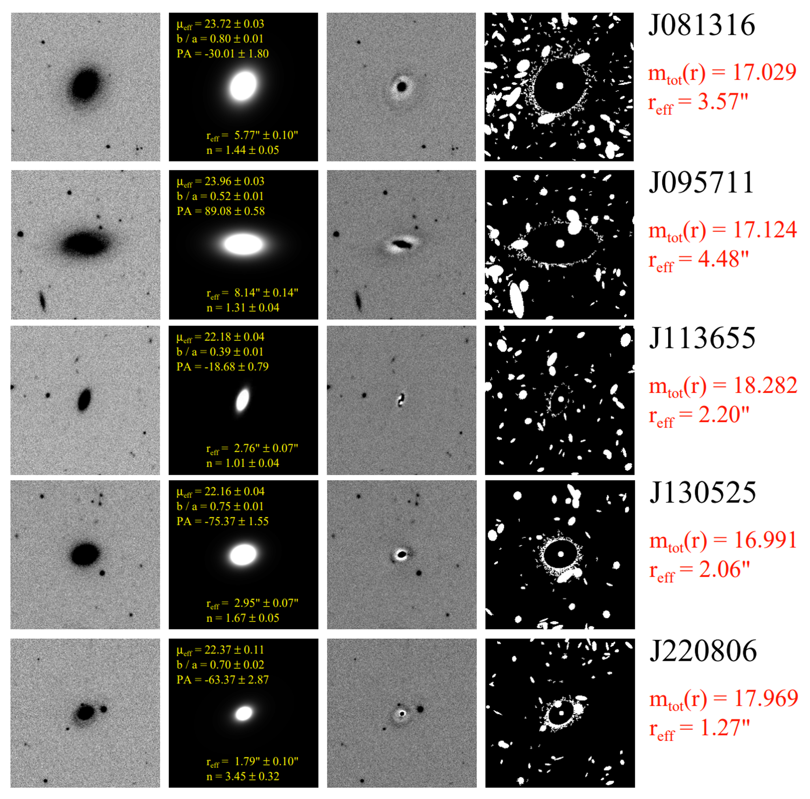

Surface Photometry Using GALFIT#
Multi-component galaxy modeling using GALFIT typically involves following steps:
Prepare the input data: The first step is to prepare the input data for GALFIT. This involves selecting the image(s) to be modeled, determining the PSF (point spread function) of the instrument, and creating a mask to exclude regions that should not be included in the model.
Initialize the model: The next step is to initialize the model parameters in GALFIT. This involves specifying the number and type of components to be included in the model (e.g., bulge, disk, bar, etc.), and setting the initial values of the model parameters (e.g., position, size, brightness, etc.).
Run the fitting process: Once the model is initialized, GALFIT can be used to fit the model to the input data. This involves minimizing the chi-squared statistic between the model and the data, using an iterative algorithm to adjust the model parameters.
Evaluate the fit: After the fitting process is complete, it is important to evaluate the quality of the fit. This can be done by examining the residuals (i.e., the difference between the data and the model), as well as the goodness-of-fit statistics provided by GALFIT (e.g., reduced chi-squared, Akaike Information Criterion, Bayesian Information Criterion, etc.).
Refine the model: Based on the evaluation of the fit, it may be necessary to refine the model by adjusting the model parameters and/or the mask. This process may need to be repeated several times until an acceptable fit is achieved.
Extract results: Once an acceptable fit is achieved, the final model parameters can be extracted from GALFIT and used to generate images or other data products that represent the modeled galaxy. These results can be used for further analysis and interpretation of the observed galaxy.
0. Install GALFIT#
Before you start, you might as well need to install GALFIT. You can download the software from the official website. Select the appropriate version for your operating system and download the executable file.
1. Prepare the Input Data#
Download SDSS Mosaic Image from SDSS Science Archive Server (SAS)#
Web link: Imaging Mosaics
Fill out the RA and Dec information, and resulting angluar size of the image. Then click the “Submit” button.

Click “Click here to download ~” to get the shell file.
Before you create the mosaic image you have to install SWarp package.
If you use Anaconda environment (check your current environment before the installation),
$ conda install -c conda-forge astromatic-swarp
For Mac Apple Silicon Users
If you specified your architecture as noarch or osx-arm64 for new Apple Silicons, you might get an error message, since the SWarp package is not available for osx-arm64 architecture yet.
In this case, you need to make a new environment and specify the architecture as osx-64 instead.
Otherwise you need to install by following the official website which I didn’t test.
Useful Resources (If you want to evaluate errors pixel by pixel)
M51#
In this tutorial, we conduct surface photometry of M51, whose image is downloaded from the archival data of SDSS, to reproduce Figure 21. (see below figure) of Peng et al. (2010).
Warning
Fitting the surface brightness profile of a spiral galaxy like M51 is a challenging task, as it typically requires a multi-component model to account for the different structural components of the galaxy (e.g., bulge, disk, spiral arms, etc.). GALFIT is a powerful tool for this purpose, but it requires careful consideration of the model parameters and fitting strategy to obtain reliable results. For spiral or irregular galaxies, it is very hard to get a result without crash. When GALFIT crashes, it prints a ascii-coded image of a nuclear explosion, which is very annoying when you encounter it over and over again. So I recommend to avoid spirals or irregulars for your first trial and class project, for your own mental health!
__/~*##$%@@@******~\-__
/f=r/~_-~ _-_ --_.^-~--\=b\
4fF / */ .o ._-__.__/~-. \*R\
/fF./ . /- /' /|/| \_ * *\ *\R\
(iC.I+ '| - *-/00 |- \ ) ) )|RB
(I| ( [ / -|/^^\ | ) /_/ | *)B
(I(. \ `` \ \m_m_|~__/ )_ .-~ F/
\b\\=_.\_b`-+-~x-_/ .. ,._/ , F/
~\_\= = =-*###%#x==-# *=- =/
~\**U/~ | i i | ~~~\===~
| I I \\
/ // i\ \\
( [ (( I@) ))) )
\_\_VYVU_/
|| * |
/* /I\ *~~\
/~-/* / \ \ ~~M~\
____----=~ // /WVW\* \|\ ***===--___
Doh! GALFIT crashed because at least one of the model parameters
is bad. The most common causes are: effective radius too small/big,
component is too far outside of fitting region (also check fitting
region), model mag too faint, axis ratio too small, Sersic index
too small/big, Nuker powerlaw too small/big. If frustrated or
problem should persist, email for help or report problem to:
Chien.Y.Peng@gmail.com

Let’s make mosaic of M51 field, with the image size of \(18'\). The r-band images of single fields for the mosaics are queried from the above process, with the RA=202.446521667, Dec=47.2273441667, Image Size=0.3.
We make the mosaic image executing the shell file.
$ cd <Move To Path Where The Shell File Exists>
$ chmod 744 <Your Shell File>
$ ./<Your Shell File>
Here, for example,
$ cd data/proj4
$ chmod 744 J132947.00+471338.0.sh
$ ./J132947.00+471338.0.sh
Then you will get J132947.00+471338.0-r.fits and J132947.00+471338.0-r.weight.fits,
the r-band image and its weight image.
import os
from pathlib import Path
os.chdir('./data/proj4')
cwd = Path.cwd()
cwd
PosixPath('/Users/hbahk/class/TAOtutorials/tutorials/data/proj4')
# this takes a while -- about 10 minutes
name = 'J132947.00+471338.0'
if not (cwd/'input').exists():
(cwd/'input').mkdir()
os.system(f'chmod 744 {name}.sh')
os.system(f'./{name}.sh')
os.system('rm *.bz2')
%config InlineBackend.figure_format = 'retina'
from astropy.io import fits
from astropy.wcs import WCS
from astropy.visualization import AsymmetricPercentileInterval, AsinhStretch, ImageNormalize
from matplotlib import pyplot as plt
import numpy as np
plt.rcParams['font.size'] = 13
hdu = fits.open(cwd/f'{name}-r.fits')
image = hdu[0].data
wcs = WCS(hdu[0].header)
norm = ImageNormalize(image, interval=AsymmetricPercentileInterval(0., 99.0), stretch=AsinhStretch())
fig = plt.figure(figsize=(8, 8))
ax = fig.add_subplot(111, projection=wcs)
im = ax.imshow(image, cmap='gray', origin='lower', norm=norm)
fig.colorbar(im)
ax.set_xlabel('RA')
ax.set_ylabel('Dec')
{kind=link}
The detector gain of SDSS images differ by the camera column (CAMCOL) and the
bands (u, g, r, i, z). To know the gain of the image, we need to check the
table from the bottom page of this link: FITS Structure for Corrected Frame
For example, the gain of CAMCOL=1 CCD in r-band is 4.71.
Since the gain is not provided in the header of the corrected frames, Swarp
package doesn’t provide the average effective gain as usual.
Let’s make error images following the guideline provided in FITS Structure for Corrected Frame.
frames = sorted(cwd.glob('frame*[0-9].fits'))
from scipy.interpolate import RegularGridInterpolator
frame = frames[0]
fhdu = fits.open(frame)
img = fhdu[0].data
sky = fhdu[2].data
allsky = sky['ALLSKY'][0].astype(float)
# be careful with the order of the axes
SX, SY = np.meshgrid(sky['XINTERP'][0].astype(float), sky['YINTERP'][0].astype(float))
gridx, gridy = np.arange(allsky.shape[1]), np.arange(allsky.shape[0])
sinterp = RegularGridInterpolator((gridy, gridx), allsky, method='linear',
bounds_error=False, fill_value=None)
simg = sinterp((SY, SX))
SX # x-axis corresponds to the axis=1, the columns of the image
array([[-4.375000e-01, -3.125000e-01, -1.875000e-01, ..., 2.551875e+02,
2.553125e+02, 2.554375e+02],
[-4.375000e-01, -3.125000e-01, -1.875000e-01, ..., 2.551875e+02,
2.553125e+02, 2.554375e+02],
[-4.375000e-01, -3.125000e-01, -1.875000e-01, ..., 2.551875e+02,
2.553125e+02, 2.554375e+02],
...,
[-4.375000e-01, -3.125000e-01, -1.875000e-01, ..., 2.551875e+02,
2.553125e+02, 2.554375e+02],
[-4.375000e-01, -3.125000e-01, -1.875000e-01, ..., 2.551875e+02,
2.553125e+02, 2.554375e+02],
[-4.375000e-01, -3.125000e-01, -1.875000e-01, ..., 2.551875e+02,
2.553125e+02, 2.554375e+02]])
from mpl_toolkits.axes_grid1 import make_axes_locatable
inorm = ImageNormalize(img, interval=AsymmetricPercentileInterval(50, 99.0), stretch=AsinhStretch())
snorm = ImageNormalize(simg, interval=AsymmetricPercentileInterval(0., 99.0), stretch=AsinhStretch())
fig = plt.figure(figsize=(10, 10))
ax = fig.add_subplot(211)
ax2 = fig.add_subplot(212)
im = ax.imshow(img, cmap='gray', origin='lower', norm=inorm)
im_sky = ax2.imshow(simg, cmap='gray', origin='lower', norm=snorm)
divider = make_axes_locatable(ax)
divider2 = make_axes_locatable(ax2)
cax = divider.append_axes('right', size='5%', pad=0.05)
cax2 = divider2.append_axes('right', size='5%', pad=0.05)
fig.colorbar(im, cax=cax, label='nmgy')
fig.colorbar(im_sky, cax=cax2, label='counts')
ax.set_title('Calibrated Image')
ax2.set_title('Reconstructed Sky Image')
Text(0.5, 1.0, 'Reconstructed Sky Image')
{kind=link}
calib = fhdu[1].data
nrowc = len(img)
cimg = calib*np.ones((nrowc, len(calib)))
inorm = ImageNormalize(img, interval=AsymmetricPercentileInterval(50, 99.0), stretch=AsinhStretch())
cnorm = ImageNormalize(cimg, interval=AsymmetricPercentileInterval(0., 99.0), stretch=AsinhStretch())
fig = plt.figure(figsize=(10, 10))
ax = fig.add_subplot(211)
ax2 = fig.add_subplot(212)
im = ax.imshow(img, cmap='gray', origin='lower', norm=inorm)
im_cal = ax2.imshow(cimg, cmap='gray', origin='lower', norm=cnorm)
divider = make_axes_locatable(ax)
divider2 = make_axes_locatable(ax2)
cax = divider.append_axes('right', size='5%', pad=0.05)
cax2 = divider2.append_axes('right', size='5%', pad=0.05)
fig.colorbar(im, cax=cax, label='nmgy')
fig.colorbar(im_cal, cax=cax2)
ax.set_title('Calibrated Image')
ax2.set_title('Calibration Image')
Text(0.5, 1.0, 'Calibration Image')
{kind=link}
dn = img/cimg + simg # count unit
# dictionary for gain and dark variance of r-band
dict_gain_r = {'1': 4.71, '2':4.6, '3':4.72, '4':4.76, '5':4.725, '6':4.895}
dict_darkvar_r = {'1': 1.8225, '2':1.00, '3':1.3225, '4':1.3225, '5':0.81, '6':0.9025}
camcol = frame.stem.split('-')[-2] # read camcol in the filename
gain = dict_gain_r[camcol]
darkvar = dict_darkvar_r[camcol]
# error map in count
dn_err = np.sqrt(dn/gain + darkvar)
img_err = dn_err*cimg # error map in nmgy
# plot flux and error map
inorm = ImageNormalize(img, interval=AsymmetricPercentileInterval(50, 99.0), stretch=AsinhStretch())
enorm = ImageNormalize(img_err, interval=AsymmetricPercentileInterval(0., 99.0), stretch=AsinhStretch())
fig = plt.figure(figsize=(10, 10))
ax = fig.add_subplot(211)
ax2 = fig.add_subplot(212)
im = ax.imshow(img, cmap='gray', origin='lower', norm=inorm)
im_cal = ax2.imshow(img_err, cmap='gray', origin='lower', norm=enorm)
divider = make_axes_locatable(ax)
divider2 = make_axes_locatable(ax2)
cax = divider.append_axes('right', size='5%', pad=0.05)
cax2 = divider2.append_axes('right', size='5%', pad=0.05)
fig.colorbar(im, cax=cax, label='nmgy')
fig.colorbar(im_cal, cax=cax2, label='nmgy')
ax.set_title('Calibrated Image')
ax2.set_title('Calibration Error Image')
Text(0.5, 1.0, 'Calibration Error Image')
{kind=link}
def get_sdss_r_errimg(frame):
fhdu = fits.open(frame)
hdr = fhdu[0].header
img = fhdu[0].data
# sky reconstruction
sky = fhdu[2].data
allsky = sky['ALLSKY'][0].astype(float)
SX, SY = np.meshgrid(sky['XINTERP'][0].astype(float), sky['YINTERP'][0].astype(float))
gridx, gridy = np.arange(allsky.shape[1]), np.arange(allsky.shape[0])
sinterp = RegularGridInterpolator((gridy, gridx), allsky, method='linear',
bounds_error=False, fill_value=None)
simg = sinterp((SY, SX))
# calibration image
calib = fhdu[1].data
nrowc = len(img)
cimg = calib*np.ones((nrowc, len(calib)))
dn = img/cimg + simg # count unit
# dictionary for gain and dark variance of r-band
# https://data.sdss.org/datamodel/files/BOSS_PHOTOOBJ/frames/RERUN/RUN/CAMCOL/frame.html
dict_gain_r = {'1': 4.71, '2':4.6, '3':4.72, '4':4.76, '5':4.725, '6':4.895}
dict_darkvar_r = {'1': 1.8225, '2':1.00, '3':1.3225, '4':1.3225, '5':0.81, '6':0.9025}
camcol = frame.stem.split('-')[-2] # read camcol in the filename
gain = dict_gain_r[camcol]
darkvar = dict_darkvar_r[camcol]
# error map in count
dn_err = np.sqrt(dn/gain + darkvar)
img_err = dn_err*cimg # error map in nmgy
return img_err, hdr
for frame in frames:
eimg, hdr = get_sdss_r_errimg(frame)
# save error image
ivhdu = fits.PrimaryHDU(1/eimg**2, header=hdr)
ivhdu.writeto(frame.parent.joinpath(frame.stem+'.ivar.fits'), overwrite=True)
# add gain to header
for frame in frames:
fhdu = fits.open(frame)
dict_gain_r = {'1': 4.71, '2':4.6, '3':4.72, '4':4.76, '5':4.725, '6':4.895}
dict_darkvar_r = {'1': 1.8225, '2':1.00, '3':1.3225, '4':1.3225, '5':0.81, '6':0.9025}
camcol = frame.stem.split('-')[-2] # read camcol in the filename
gain = dict_gain_r[camcol]
fhdu[0].header['GAIN'] = gain
fhdu.writeto(frame, overwrite=True)
# mosaic images again and make a mosaic of the ivar images
str_eframes = ' '.join([str(frame.stem)+'.ivar.fits\[0\]' for frame in frames])
str_frames = ' '.join([str(frame.stem)+'.fits' for frame in frames])
os.system('swarp '+str_frames)
os.system('swarp '+str_eframes+f' -IMAGEOUT_NAME {name}-r.ivar.fits -WEIGHTOUT_NAME {name}-r.err.weight.fits')
# 'swarp '+str_frames+' -c default.swarp -WEIGHT_TYPE MAP_RMS -WEIGHT_SUFFIX .err.fits\[0\] -RESCALE_WEIGHTS N'
0
# get sigma image from ivar image
DIR_INPUT = 'input'
if not (cwd/DIR_INPUT).exists():
(cwd/DIR_INPUT).mkdir()
ivhdu = fits.open(f'{name}-r.ivar.fits')
ivimg = ivhdu[0].data
eimg = 1/np.sqrt(ivimg)
ehdu = fits.PrimaryHDU(eimg, header=ivhdu[0].header)
ehdu.writeto(cwd/DIR_INPUT/f'sigma_{name}-r.fits', overwrite=True)
# galfit takes nmagy as count and devide the exposure time to calculate the magnitude
hdu[0].header['EXPTIME'] = 1.0
hdu.writeto(cwd/DIR_INPUT/f'input_{name}-r.fits', overwrite=True)
Getting PSF#
Since we need PSF to use GALFIT, we will get PSF of the image using the PSFEx software. If you want more information about PSFEx, please check this link: PSFEx: Getting Started
# Aperture size for SExtractor run
FACTOR = 1
PHOT_APERTURE = 10*FACTOR # in arcsec
SCALE = 0.396127*FACTOR # arcsec/pixel
PHOT_APERTURE_PIX = round(PHOT_APERTURE/SCALE)
print(SCALE, PHOT_APERTURE_PIX)
0.396127 25
# SExtractor parameter file setting
param_name = "output.param"
f = open(param_name, "w")
f.write("X_IMAGE\n") # Object position along x [pixel]
f.write("Y_IMAGE\n") # Object position along y [pixel]
f.write(f"VIGNET({PHOT_APERTURE_PIX},{PHOT_APERTURE_PIX})\n") # Pixel data around detection [count]
f.write("FLUX_RADIUS\n") # Half-light radii
f.write("SNR_WIN\n") # Gaussian-weighted SNR
f.write("FLUX_APER(1)\n") # Flux vector within fixed circular aperture(s) [count]
f.write("FLUXERR_APER(1)\n") # RMS error vector for aperture flux(es) [count]
f.write("ELONGATION\n") # A_IMAGE/B_IMAGE
f.write("FLAGS\n") # Extraction flags
f.close()
# SExtractor run to feed PSFEx
PATH_CONV = "/opt/homebrew/opt/sextractor/share/sextractor/default.conv"
PATH_NNW = "/opt/homebrew/opt/sextractor/share/sextractor/default.nnw"
SEXTRACTOR_COMMAND = "sex"
catalog_name = f"{name}-r.cat"
exec_sextractor = (
f"{SEXTRACTOR_COMMAND} {name}-r.fits -c default.sex"
+ f" -CATALOG_NAME {catalog_name}"
+ f" -PARAMETERS_NAME {param_name}"
+ f" -FILTER_NAME {PATH_CONV}"
+ f" -CATALOG_TYPE FITS_LDAC -PHOT_APERTURES {round(PHOT_APERTURE/SCALE)}"
)
os.system("sex -d >> default.sex")
os.system(exec_sextractor)
Show code cell output
>
----- SExtractor 2.28.0 started on 2024-05-11 at 18:00:36 with 1 thread
> Setting catalog parameters
> Reading detection filter
> Initializing catalog
> Looking for J132947.00+471338.0-r.fits
----- Measuring from: J132947.00+471338.0-r.fits
"30 N" / no ext. header / 2726x2726 / 32 bits (floats)
Detection+Measurement image: > Setting up background maps
> Setting up background map at line: 64
> Setting up background map at line: 128
> Setting up background map at line: 192
> Setting up background map at line: 256
> Setting up background map at line: 320
> Setting up background map at line: 384
> Setting up background map at line: 448
> Setting up background map at line: 512
> Setting up background map at line: 576
> Setting up background map at line: 640
> Setting up background map at line: 704
> Setting up background map at line: 768
> Setting up background map at line: 832
> Setting up background map at line: 896
> Setting up background map at line: 960
> Setting up background map at line: 1024
> Setting up background map at line: 1088
> Setting up background map at line: 1152
> Setting up background map at line: 1216
> Setting up background map at line: 1280
> Setting up background map at line: 1344
> Setting up background map at line: 1408
> Setting up background map at line: 1472
> Setting up background map at line: 1536
> Setting up background map at line: 1600
> Setting up background map at line: 1664
> Setting up background map at line: 1728
> Setting up background map at line: 1792
> Setting up background map at line: 1856
> Setting up background map at line: 1920
> Setting up background map at line: 1984
> Setting up background map at line: 2048
> Setting up background map at line: 2112
> Setting up background map at line: 2176
> Setting up background map at line: 2240
> Setting up background map at line: 2304
> Setting up background map at line: 2368
> Setting up background map at line: 2432
> Setting up background map at line: 2496
> Setting up background map at line: 2560
> Setting up background map at line: 2624
> Setting up background map at line: 2688
> Filtering background map(s)
> Computing background d-map
> Computing background-noise d-map
(M+D) Background: 0.00834126 RMS: 0.0226906 / Threshold: 0.0340358
> Scanning image
> Line: 25 Objects: 9 detected / 0 sextracted
> Line: 50 Objects: 19 detected / 0 sextracted
> Line: 75 Objects: 29 detected / 0 sextracted
> Line: 100 Objects: 46 detected / 0 sextracted
> Line: 125 Objects: 60 detected / 0 sextracted
> Line: 150 Objects: 69 detected / 0 sextracted
> Line: 175 Objects: 80 detected / 0 sextracted
> Line: 200 Objects: 98 detected / 0 sextracted
> Line: 225 Objects: 118 detected / 0 sextracted
> Line: 250 Objects: 138 detected / 0 sextracted
> Line: 275 Objects: 154 detected / 0 sextracted
> Line: 300 Objects: 167 detected / 0 sextracted
> Line: 325 Objects: 205 detected / 0 sextracted
> Line: 350 Objects: 252 detected / 0 sextracted
> Line: 375 Objects: 282 detected / 0 sextracted
> Line: 400 Objects: 312 detected / 0 sextracted
> Line: 425 Objects: 347 detected / 0 sextracted
> Line: 450 Objects: 395 detected / 0 sextracted
> Line: 475 Objects: 442 detected / 0 sextracted
> Line: 500 Objects: 482 detected / 0 sextracted
> Line: 525 Objects: 518 detected / 0 sextracted
> Line: 550 Objects: 558 detected / 0 sextracted
> Line: 575 Objects: 605 detected / 0 sextracted
> Line: 600 Objects: 681 detected / 0 sextracted
> Line: 625 Objects: 750 detected / 0 sextracted
> Line: 650 Objects: 800 detected / 0 sextracted
> Line: 675 Objects: 829 detected / 0 sextracted
> Line: 700 Objects: 870 detected / 0 sextracted
> Line: 725 Objects: 909 detected / 0 sextracted
> Line: 750 Objects: 938 detected / 0 sextracted
> Line: 775 Objects: 968 detected / 0 sextracted
> Line: 800 Objects: 995 detected / 0 sextracted
> Line: 825 Objects: 1050 detected / 0 sextracted
> Line: 850 Objects: 1095 detected / 0 sextracted
> Line: 875 Objects: 1140 detected / 0 sextracted
> Line: 900 Objects: 1184 detected / 0 sextracted
> Line: 925 Objects: 1237 detected / 0 sextracted
> Line: 950 Objects: 1277 detected / 0 sextracted
> Line: 975 Objects: 1327 detected / 0 sextracted
> Line: 1000 Objects: 1370 detected / 0 sextracted
> Line: 1022 Objects: 1408 detected / 0 sextracted
> Line: 1025 Objects: 1418 detected / 15 sextracted
> Line: 1050 Objects: 1454 detected / 25 sextracted
> Line: 1075 Objects: 1501 detected / 34 sextracted
> Line: 1100 Objects: 1530 detected / 48 sextracted
> Line: 1125 Objects: 1556 detected / 60 sextracted
> Line: 1150 Objects: 1585 detected / 73 sextracted
> Line: 1175 Objects: 1620 detected / 81 sextracted
> Line: 1200 Objects: 1672 detected / 101 sextracted
> Line: 1225 Objects: 1707 detected / 115 sextracted
> Line: 1250 Objects: 1755 detected / 133 sextracted
> Line: 1275 Objects: 1795 detected / 155 sextracted
> Line: 1300 Objects: 1837 detected / 172 sextracted
> Line: 1325 Objects: 1874 detected / 195 sextracted
> Line: 1350 Objects: 1912 detected / 224 sextracted
> Line: 1375 Objects: 1944 detected / 245 sextracted
> Line: 1400 Objects: 1980 detected / 273 sextracted
> Line: 1425 Objects: 2024 detected / 309 sextracted
> Line: 1450 Objects: 2066 detected / 342 sextracted
> Line: 1475 Objects: 2125 detected / 363 sextracted
> Line: 1500 Objects: 2193 detected / 391 sextracted
> Line: 1510 Objects: 2215 detected / 400 sextracted
> Line: 1525 Objects: 2234 detected / 422 sextracted
> Line: 1550 Objects: 2281 detected / 454 sextracted
> Line: 1575 Objects: 2327 detected / 487 sextracted
> Line: 1600 Objects: 2364 detected / 522 sextracted
> Line: 1625 Objects: 2394 detected / 546 sextracted
> Line: 1650 Objects: 2429 detected / 579 sextracted
> Line: 1675 Objects: 2465 detected / 599 sextracted
> Line: 1700 Objects: 2493 detected / 629 sextracted
> Line: 1725 Objects: 2544 detected / 651 sextracted
> Line: 1750 Objects: 2579 detected / 666 sextracted
> Line: 1775 Objects: 2614 detected / 681 sextracted
> Line: 1800 Objects: 2647 detected / 698 sextracted
> Line: 1825 Objects: 2707 detected / 726 sextracted
> Line: 1850 Objects: 2781 detected / 746 sextracted
> Line: 1875 Objects: 2835 detected / 770 sextracted
> Line: 1900 Objects: 2888 detected / 791 sextracted
> Line: 1910 Objects: 2911 detected / 800 sextracted
> Line: 1925 Objects: 2937 detected / 818 sextracted
> Line: 1950 Objects: 2994 detected / 830 sextracted
> Line: 1975 Objects: 3055 detected / 857 sextracted
> Line: 2000 Objects: 3122 detected / 873 sextracted
> Line: 2025 Objects: 3170 detected / 900 sextracted
> Line: 2050 Objects: 3229 detected / 922 sextracted
> Line: 2075 Objects: 3284 detected / 938 sextracted
> Line: 2100 Objects: 3342 detected / 954 sextracted
> Line: 2125 Objects: 3390 detected / 971 sextracted
> Line: 2150 Objects: 3422 detected / 991 sextracted
> Line: 2175 Objects: 3453 detected / 1010 sextracted
> Line: 2200 Objects: 3472 detected / 1026 sextracted
> Line: 2225 Objects: 3490 detected / 1043 sextracted
> Line: 2250 Objects: 3509 detected / 1069 sextracted
> Line: 2275 Objects: 3523 detected / 1094 sextracted
> Line: 2300 Objects: 3542 detected / 1120 sextracted
> Line: 2325 Objects: 3558 detected / 1143 sextracted
> Line: 2350 Objects: 3571 detected / 1166 sextracted
> Line: 2375 Objects: 3591 detected / 1181 sextracted
> Line: 2393 Objects: 3604 detected / 1200 sextracted
> Line: 2400 Objects: 3609 detected / 1208 sextracted
> Line: 2425 Objects: 3624 detected / 1238 sextracted
> Line: 2450 Objects: 3644 detected / 1263 sextracted
> Line: 2475 Objects: 3664 detected / 1298 sextracted
> Line: 2500 Objects: 3674 detected / 1334 sextracted
> Line: 2525 Objects: 3686 detected / 1350 sextracted
> Line: 2550 Objects: 3702 detected / 1369 sextracted
> Line: 2575 Objects: 3727 detected / 1392 sextracted
> Line: 2600 Objects: 3735 detected / 1411 sextracted
> Line: 2625 Objects: 3756 detected / 1423 sextracted
> Line: 2650 Objects: 3767 detected / 1443 sextracted
> Line: 2675 Objects: 3778 detected / 1465 sextracted
> Line: 2700 Objects: 3797 detected / 1477 sextracted
> Line: 2725 Objects: 3813 detected / 1494 sextracted
> Line: 2726 Objects: 3816 detected / 1600 sextracted
> Line: 2726 Objects: 3816 detected / 2000 sextracted
Objects: detected 3816 / sextracted 2262
> Closing files
>
> All done (in 2.1 s: 1279.5 lines/s , 1061.7 detections/s)
0
# PSFEx run
config_psfex = 'config.psfex'
os.system(f'psfex -d >> {config_psfex}')
os.system(f'psfex {catalog_name} -c {config_psfex}')
Show code cell output
> WARNING: This executable has been compiled using a version of the ATLAS library without support for multithreading. Performance will be degraded.
>
----- PSFEx 3.24.2 started on 2024-05-11 at 18:00:38 with 8 threads
>
----- 1 input catalogues:
J132947.00+471338.0-: "30 N " 1 extension 2262 detections
> Initializing contexts...
> Computing optimum PSF sampling steps...
> Reading data from J132947.00+471338.0-r...
> Computing final PSF model for J132947.00+471338.0-r...
filename [ext] accepted/total samp. chi2/dof FWHM ellip. resi. asym.
> Computing diagnostics for J132947.00+471338.0-r...
J132947.00+471338 82/104 0.83 0.87 3.22 0.01 0.02 0.04
> Saving CHECK-image #1...
> Saving CHECK-image #2...
> Saving CHECK-image #3...
> Saving CHECK-image #4...
> Saving CHECK-image #5...
> Saving PSF model and metadata for J132947.00+471338.0-r...
> Writing XML file...
>
> All done (in 0.0 s)
0
We obtained J132947.00+471338.0-r.psf!
phdu = fits.open(f'{name}-r.psf')
fwhm = phdu[1].header['PSF_FWHM']
print('PSF_FWHM:', fwhm)
phdu.info()
phdu[1].header
PSF_FWHM: 3.88474584
Filename: J132947.00+471338.0-r.psf
No. Name Ver Type Cards Dimensions Format
0 PRIMARY 1 PrimaryHDU 4 ()
1 PSF_DATA 1 BinTableHDU 32 1R x 1C [3750E]
XTENSION= 'BINTABLE' / THIS IS A BINARY TABLE (FROM THE LDACTOOLS)
BITPIX = 8 /
NAXIS = 2 /
NAXIS1 = 15000 / BYTES PER ROW
NAXIS2 = 1 / NUMBER OF ROWS
PCOUNT = 0 / RANDOM PARAMETER COUNT
GCOUNT = 1 / GROUP COUNT
TFIELDS = 1 / FIELDS PER ROWS
EXTNAME = 'PSF_DATA' / TABLE NAME
LOADED = 104 / Number of loaded sources
ACCEPTED= 82 / Number of accepted sources
CHI2 = 0.87119488 / Final reduced chi2
POLNAXIS= 2 / Number of context parameters
POLGRP1 = 1 / Polynom group for this context parameter
POLNAME1= 'X_IMAGE ' / Name of this context parameter
POLZERO1= 1.363870513320E+03 / Offset value for this context parameter
POLSCAL1= 2.722719910860E+03 / Scale value for this context parameter
POLGRP2 = 1 / Polynom group for this context parameter
POLNAME2= 'Y_IMAGE ' / Name of this context parameter
POLZERO2= 1.364084029078E+03 / Offset value for this context parameter
POLSCAL2= 2.722851961374E+03 / Scale value for this context parameter
POLNGRP = 1 / Number of context groups
POLDEG1 = 2 / Polynom degree for this context group
PSF_FWHM= 3.88474584 / PSF FWHM in image pixels
PSF_SAMP= 0.82654166 / Sampling step of the PSF data in image pixels
PSFNAXIS= 3 / Dimensionality of the PSF data
PSFAXIS1= 25 / Number of element along this axis
PSFAXIS2= 25 / Number of element along this axis
PSFAXIS3= 6 / Number of element along this axis
TTYPE1 = 'PSF_MASK' / Tabulated PSF data
TFORM1 = '3750E '
TDIM1 = '(25, 25, 6)'
# Inspect the PSF image (at the center of the image)
image_psf = phdu[1].data['PSF_MASK'][0][0]
norm_psf = ImageNormalize(image_psf, interval=AsymmetricPercentileInterval(0., 99.0), stretch=AsinhStretch())
fig = plt.figure(figsize=(5, 5))
ax = fig.add_subplot(111)
pim = ax.imshow(image_psf, cmap='gray', origin='lower', norm=norm_psf)
fig.colorbar(pim)
# Save the PSF image
hdu_psf = fits.PrimaryHDU(image_psf)
hdu_psf.writeto(cwd/DIR_INPUT/f'psf_{name}-r.fits', overwrite=True)
{kind=link}
Making the Mask Image#
Let’s obtain the celestial coordinates (RA and DEC) of two objects, M51A and M51B, from the NASA/IPAC Extragalactic Database (NED). From this positions, we will determine the center coordinate pixels for each galaxy, and construct models individually.
from astroquery.ipac.ned import Ned
ra_a, dec_a = Ned.query_object("M51A")['RA', 'DEC'][0]
ra_b, dec_b = Ned.query_object("M51B")['RA', 'DEC'][0]
x_a, y_a = wcs.all_world2pix(ra_a, dec_a, 0)
x_b, y_b = wcs.all_world2pix(ra_b, dec_b, 0)
fig = plt.figure(figsize=(8, 8))
ax = fig.add_subplot(111, projection=wcs)
im = ax.imshow(image, cmap='gray', origin='lower', norm=norm)
fig.colorbar(im)
ax.set_xlabel('RA')
ax.set_ylabel('Dec')
ax.scatter(x_a, y_a, marker='o', s=100, facecolors='none', edgecolors='r')
ax.scatter(x_b, y_b, marker='o', s=100, facecolors='none', edgecolors='b')
<matplotlib.collections.PathCollection at 0x7faa52057490>
{kind=link}
Two red and blue circular markers are plotted on the image at the pixel coordinates of M51A and M51B, respectively.
from photutils.segmentation import detect_sources
from photutils.background import Background2D, MedianBackground
from astropy.convolution import convolve
from photutils.segmentation import make_2dgaussian_kernel
# from photutils.detection import DAOStarFinder
bkg_estimator = MedianBackground()
bkg = Background2D(image, (100, 100), filter_size=(5, 5), bkg_estimator=bkg_estimator)
threshold = 1.0*bkg.background_rms
kernel = make_2dgaussian_kernel(fwhm*3, size=15)
convolved_data = convolve(image, kernel)
segment_map = detect_sources(convolved_data, threshold, npixels=10)
print(segment_map)
label_main = segment_map.data[int(y_a), int(x_a)]
orig_seg = segment_map.copy()
segment_map.remove_labels([label_main])
mask = np.nonzero(segment_map.data)
masked_image = image.copy()
masked_image[mask] = -1
mask_image = np.zeros_like(image)
mask_image[mask] = 1
# # additional masking
# daofind = DAOStarFinder(fwhm=fwhm, threshold=np.median(threshold))
# stars = daofind(masked_image, mask=orig_seg.data.astype(bool))
# hw = 2
# for star in stars:
# x, y = int(star['xcentroid']), int(star['ycentroid'])
# mask_image[y-hw:y+hw+1, x-hw:x+hw+1] = 0
# masked_image[y-hw:y+hw+1, x-hw:x+hw+1] = -1
<photutils.segmentation.core.SegmentationImage>
shape: (2726, 2726)
nlabels: 647
labels: [ 1 2 3 4 5 ... 643 644 645 646 647]
fig = plt.figure(figsize=(8, 8))
ax = fig.add_subplot(111, projection=wcs)
ax.imshow(masked_image, cmap='gray', origin='lower', norm=norm)
ax.set_xlabel('RA')
ax.set_ylabel('Dec')
{kind=link}
# Save the mask image
hdu_mask = fits.PrimaryHDU(mask_image)
hdu_mask.writeto(cwd/DIR_INPUT/f'mask_{name}-r.fits', overwrite=True)
2. Initialize Model and Run GALFIT#
All the information you need is contained in GALFIT User Manual(see Section 7 and 8)!
Now Let’s construct the input file. Below is an example input file (you can find it from here), which includes all possible funtional type and basic information about them.
================================================================================
# IMAGE and GALFIT CONTROL PARAMETERS
A) gal.fits # Input data image (FITS file)
B) imgblock.fits # Output data image block
C) none # Sigma image name (made from data if blank or "none")
D) psf.fits # # Input PSF image and (optional) diffusion kernel
E) 1 # PSF fine sampling factor relative to data
F) none # Bad pixel mask (FITS image or ASCII coord list)
G) none # File with parameter constraints (ASCII file)
H) 1 93 1 93 # Image region to fit (xmin xmax ymin ymax)
I) 100 100 # Size of the convolution box (x y)
J) 26.563 # Magnitude photometric zeropoint
K) 0.038 0.038 # Plate scale (dx dy) [arcsec per pixel]
O) regular # Display type (regular, curses, both)
P) 0 # Options: 0=normal run; 1,2=make model/imgblock & quit
# THE OBJECT LIST BELOW can be however long or short as the complexity
# requires. The user has complete freedom to mix and match the components
# by duplicating each object block.
# INITIAL FITTING PARAMETERS
#
# column 1: Parameter number
# column 2:
# -- Parameter 0: the allowed functions are: sersic, nuker, expdisk
# edgedisk, devauc, king, moffat, gaussian, ferrer, psf, sky
# -- Parameter 1-10: value of the initial parameters
# -- Parameter C0: For diskiness/boxiness
# <0 = disky
# >0 = boxy
# -- Parameter Z: Outputting image options, the options are:
# 0 = normal, i.e. subtract final model from the data to create
# the residual image
# 1 = Leave in the model -- do not subtract from the data
#
# column 3: allow parameter to vary (yes = 1, no = 0)
# column 4: comment
# Sersic function
0) sersic # Object type
1) 300. 350. 1 1 # position x, y [pixel]
3) 20.00 1 # total magnitude
4) 4.30 1 # R_e [Pixels]
5) 5.20 1 # Sersic exponent (deVauc=4, expdisk=1)
9) 0.30 1 # axis ratio (b/a)
10) 10.0 1 # position angle (PA) [Degrees: Up=0, Left=90]
Z) 0 # Skip this model in output image? (yes=1, no=0)
# Nuker function
0) nuker # Object type
1) 250. 475. 1 1 # position x, y [pixel]
3) 17.2 1 # mu(Rb) [surface brightness mag. at Rb]
4) 20.5 1 # Rb [pixels]
5) 1.2 1 # alpha (sharpness of transition)
6) 0.5 1 # beta (outer powerlaw slope)
7) 0.7 1 # gamma (inner powerlaw slope)
9) 0.72 1 # axis ratio (b/a)
10) -25.2 1 # position angle (PA) [Degrees: Up=0, Left=90]
Z) 0 # Skip this model in output image? (yes=1, no=0)
# deVaucouleur function
0) devauc # Object type
1) 301.2 351.5 1 1 # position x, y [pixel]
3) 18. 1 # total magnitude
4) 32. 1 # R_e [Pixels]
9) 0.5 1 # axis ratio (b/a)
10) 107. 1 # position angle (PA) [Degrees: Up=0, Left=90]
Z) 0 # Skip this model in output image? (yes=1, no=0)
# Exponential function
0) expdisk # Object type
1) 405. 365 1 1 # position x, y [pixel]
3) 17.0 1 # total magnitude
4) 20.5 1 # Rs [Pixels]
9) 0.3 1 # axis ratio (b/a)
10) 25 1 # position angle (PA) [Degrees: Up=0, Left=90]
Z) 0 # Skip this model in output image? (yes=1, no=0)
# Edge-on disk function
0) edgedisk # Object type
1) 405. 365 1 1 # position x, y [pixel]
3) 17.0 1 # central surface brightness [mag/arcsec^2]
4) 10.5 1 # disk scale-height [Pixels]
5) 20.5 1 # disk scale-length [Pixels]
10) 25 1 # position angle (PA) [Degrees: Up=0, Left=90]
Z) 0 # Skip this model in output image? (yes=1, no=0)
# Moffat function
0) moffat # object type
1) 372.0 450.0 1 1 # position x, y [pixel]
3) 16.5 1 # total magnitude
4) 0.5 1 # FWHM [Pixels]
5) 1.5 1 # powerlaw
9) 0.3 1 # axis ratio (b/a)
10) 25 1 # position angle (PA) [Degrees: Up=0, Left=90]
Z) 0 # Skip this model in output image? (yes=1, no=0)
# Ferrer function
0) ferrer # Component type
1) 100.0 100.0 0 0 # Position x, y
3) 10.0000 0 # Central surface brghtness [mag/arcsec^2]
4) 50.0000 0 # Outer truncation radius [pix]
5) 4.0000 0 # Alpha (outer truncation sharpness)
6) 2.0000 0 # Beta (central slope)
9) 0.5000 1 # Axis ratio (b/a)
10) 50.0000 1 # Position angle (PA) [deg: Up=0, Left=90]
Z) 0 # Skip this model in output image? (yes=1, no=0)
# Gaussian function
0) gaussian # object type
1) 402.3 345.9 1 1 # position x, y [pixel]
3) 18.5 1 # total magnitude
4) 0.5 0 # FWHM [pixels]
9) 0.3 1 # axis ratio (b/a)
10) 25 1 # position angle (PA) [Degrees: Up=0, Left=90]
Z) 0 # leave in [1] or subtract [0] this comp from data?
# The Empirical King Profile
0) king # Object type
1) 49.9925 49.9705 1 1 # position x, y
3) 14.9805 1 # mu(0)
4) 10.1328 1 # Rc
5) 51.0968 1 # Rt
6) 2.0485 1 # alpha
9) 0.9918 1 # axis ratio (b/a)
10) 20.7684 1 # position angle (PA)
Z) 0 # Skip this model in output image? (yes=1, no=0)
# PSF fit.
0) psf # object type
1) 402.3 345.9 1 1 # position x, y [pixel]
3) 18.5 1 # total magnitude
Z) 0 # Skip this model in output image? (yes=1, no=0)
# sky
0) sky
1) 0.77 0 # sky background [ADU counts]
2) 0.000 0 # dsky/dx (sky gradient in x)
3) 0.000 0 # dsky/dy (sky gradient in y)
Z) 0 # Skip this model in output image? (yes=1, no=0)
# The parameters C0, B1, B2, F1, F2, etc. listed below are hidden
# from the user unless he/she explicitly requests them. These can
# be tagged on to the end of any previous components except, of
# course, the PSF and the sky -- although galfit won't bar you from doing
# so, and will just ignore them. Note that a Fourier or Bending mode
# amplitude of exactly 0 will cause GALFIT to crash because the
# derivative image GALFIT computes internally will be entirely 0. If a
# Fourier or Bending amplitude is set to 0 initially GALFIT will reset it
# to a value of 0.01. To prevent GALFIT from doing so, one can set it to any
# other value.
# Bending modes
B1) 0.07 1 # Bending mode 1 (shear)
B2) 0.01 1 # Bending mode 2 (banana shape)
B3) 0.03 1 # Bending mode 3 (S-shape)
# Azimuthal fourier modes
F1) 0.07 30.1 1 1 # Az. Fourier mode 1, amplitude and phase angle
F2) 0.01 10.5 1 1 # Az. Fourier mode 2, amplitude and phase angle
F6) 0.03 10.5 1 1 # Az. Fourier mode 6, amplitude and phase angle
F10) 0.08 20.5 1 1 # Az. Fourier mode 10, amplitude and phase angle
F20) 0.01 23.5 1 1 # Az. Fourier mode 20, amplitude and phase angle
# Traditional Diskyness/Boxyness parameter c
C0) 0.1 0 # traditional diskyness(-)/boxyness(+)
# PA rotation is used most often to create spiral galaxies, although
# it can be used to fit isophotal rotations too. Note that the parameters
# R9 (inclination to line of sight) and R10 (sky position angle) differ
# very subtly (but importantly) from the classical axis ratio (q, parameter
# 9) and position angle (PA, 10), so you need to understand the
# distinction well. R9 and R10 should be set to 0 if one is modeling early
# type galaxies, because otherwise they are completely degenerate with
# the classical q and PA. R9 and R10 are used to project a spiral galaxy
# disk, assumed to be round viewed face on (i.e. inclination of 0 degrees,
# R9=0), to other orientations and flattening. The disk orientation, R10
# is 0 when pointing up and increases counter-clockwise, just like usual.
# When viewed face on, the thickness of the spiral arm is controlled by
# classical parameter 9, i.e. the axis ratio. When R9 and R10 are zero,
# everything is what you are used to with the old GALFIT. If R9 and R10 are
# not 0, then the classical parameters 9 and 10 (q, PA) will be a bit
# un-intuitive, but perfectly internally consistent with the scheme just
# described. For spiral galaxies, when and both R9 and R10 are 0, the
# classical position angle corresponds to the PA of the galaxy bar. This all
# sounds pretty confusing because you're just reading. But once you start
# playing with it it'll become more clear what I'm talking about.
# To have GALFIT generate some example galaxies, set P=1.
#
# Note that you can couple an arbitrary number of Fourier components with
# coordinate rotation. If you do so, you can create very complex,
# multi-armed, spiral structures, and arms that have different
# thicknesses.
R0) powerlaw # PA rotation function (power, log, none)
R1) 30. 1 # bar radius [pixels]
R2) 100. 1 # 96% asymptotic radius (i.e. at 96% of tanh rotation)
R3) 275. 1 # cumul. coord. rotation out to asymp. radius [degrees]
R4) 0.5 1 # asymptotic spiral arm powerlaw
R9) 0.5 1 # inclination to L.o.S. (controls projected axis ratio)
R10) 30. 1 # sky position angle
# The other coordinate rotation function is the log function.
R0) log # PA rotation func. (tanh, sqrt, log, linear, none)
R1) 30. 1 # bar radius [pixels]
R2) 100. 1 # 96% asymptotic radius (i.e. at 96% of tanh rotation)
R3) -59.9192 1 # cumul. coord. rotation out to asymp. radius [degrees]
R4) 10. 1 # Logarithmic winding scale radius [pixels]
R9) -56.2757 1 # Inclination to L.o.S. [degrees]
R10) 157.9937 1 # Sky position angle
# Create a truncation by multiplying a profile function with a
# hyperbolic tangent transition. The break radius, r_break, is defined
# as the radius which has 99% the flux of an original function, whereas
# the softening radius, r_soft, is where the function has only 1% of the
# flux of the original. Under normal circumstances, r_break < r_soft.
# On the other hand, r_break > r_soft is also possible. This happens,
# for instance, if one wants to generate a ring model with a hyperbolic
# tangent truncation in the inner region.
#
# When multiple profiles are linked, mathematically they are linked by:
# f_net(r) = Sum{f_inner(r)} * (1-s(r)) + Sum{f_outer(r)} * s(r).
# The transition radii are shared by the inner & outer functions in the
# sense that r_break is where inner profiles reaches 99% of their normal
# flux; it is also the radius where the outer functions reaches 1% of their
# own normal flux, and vice versa. When this happens, be careful that the
# sense of the break vs. asymptotic radius are in the correct sense, or
# else things can get very confusing very quickly. So as to minimize
# confusion when linking, consistently use r_break < r_soft.
#
# When linking two profiles, the flux parameter for the inner component
# is the surface brightness at the original (untruncated) effective
# radius "Re" for the Sersic profile instead of the total flux, or central
# surface brightness for all other profiles (gaussian, moffat, etc.).
# The outer component flux normalization is the surface brightness
# at the **break** radius.
#
# Note that the Fourier and bending modes can operate on the truncation
# parameters independently of the light component that the truncation
# parameters are modifying.
#
#
# v--- r_break ---v
#
# ____ ___
# / \
# ___/ \___
#
# ^---- r_soft ----^
#
# There are 4 kinds of truncation modes, designated by, "radial", "radial-b",
# for Type 1, versus "radial2", and "radial2-b" for Type 2.
#
# The difference between Type 1 and Type 2 is in the definition of
# parameters T3 and T4. For Type 1, T3 is "Break radius", and T4 is
# the "Softening length", i.e. (R_break) and (Delta R). For Type 2, T3 is
# still the "Break radius", but T4 is the "Softening radius", i.e.
# inner and outer break radius.
#
# As for Type "b" versus Type "a" (i.e. non-b), the difference is that
# "Type a" is intended for spiral structures, i.e. the truncation shape
# (axis ratio and PA) are tilted and rotated by the same angles as the
# spiral arms. Whereas for "Type b" truncations, the shape parameters
# refer to how they appear in projection, i.e. in the plane of the sky.
# For non-spiral models, there's no difference between "Type a" and
# "Type b".
# Truncated Sersic function
0) sersic # Object type
1) 300. 350. 1 1 # position x, y [pixel]
3) 20.00 1 # total magnitude
4) 4.30 1 # R_e [Pixels]
5) 5.20 1 # Sersic exponent (deVauc=4, expdisk=1)
9) 0.30 1 # axis ratio (b/a)
10) 10.0 1 # position angle (PA) [Degrees: Up=0, Left=90]
Ti) 5 # Inner truncation by component 5
To) 2 # Outer truncation by component 2
Z) 0 # leave in [1] or subtract [0] this comp from data?
# Object number: 5
T0) radial # truncation
T1) 200. 150. 1 1 # Centroid of truncation function (optional)
T4) 4.4179 1 # Break radius (99% normal flux) [pixels]
T5) 9.1777 1 # Softening length (1% normal flux) [pixels]
T9) 0.7 1 # Axis ratio (optional)
T10) -32. 1 # Position angle (optional)
F1) 0.1 30 1 # Fourier mode1 (now modifying truncation)
# Set output directory
DIR_OUTPUT = 'output'
if not (cwd/DIR_OUTPUT).exists():
(cwd/DIR_OUTPUT).mkdir()
SCALE
0.396127
PA_GUESS = 13.
# Construct the GALFIT input file (*.feedme)
f = open(f"{name}.feedme", "w")
# Image and GALFIT control parameters (Section 8.1)
f.write(f"A) {DIR_INPUT}/input_{name}-r.fits\n") # Input data image
f.write(f"B) {DIR_OUTPUT}/block_{name}-r.fits\n") # Output data image block
f.write(f"C) {DIR_INPUT}/sigma_{name}-r.fits\n") # Sigma image name
# f.write("C) none\n") # Sigma image name
f.write(f"D) {DIR_INPUT}/psf_{name}-r.fits\n") # Input PSF image
f.write("E) 1\n") # PSF find sampling factor relative to data
f.write(f"F) {DIR_INPUT}/mask_{name}-r.fits\n") # Bad pixel mask
f.write(f"G) {name}.constrain\n") # File with parameter constraints
# f.write("G) none\n") # File with parameter constraints
f.write(f"H) {1:d} {len(image):d} {1:d} {len(image):d}\n") # Image region to fit (xmin xmax ymin ymax)
f.write(f"I) {50*fwhm} {50*fwhm}\n") # Size of the convolution box (x y) https://users.obs.carnegiescience.edu/peng/work/galfit/TFAQ.html#convbox
f.write("J) 22.5\n") # Magnitude photometric zeropoint
f.write(f"K) {SCALE} {SCALE}\n") # Plate scale (dx dy) [arcsec per pixel]
f.write("O) regular\n") # Display type (regular, curses, both)
f.write("P) 0\n\n") # Options (0 = normal run; 1,2 = make model/imgblock & quit)
# Initial fitting parameters
#
# For object type, the allowed functions are:
# nuker, sersic, expdisk, devauc, king, psf, gaussian, moffat,
# ferrer, powsersic, sky, and isophote.
#
# Hidden parameters will only appear when they're specified:
# C0 (diskyness/boxyness),
# Fn (n=integer, Azimuthal Fourier Modes),
# R0-R10 (PA rotation, for creating spiral structures).
# ----------------------------------------------------------------------------
# Classical Object Fitting Parameters 0-10, and Z (Section 8.2)
# The second parameter determines whether the parameter should be fixed (0) or not (1).
# M51A - compound bulge 1
f.write("0) sersic\n") # Object type
f.write(f"1) {x_a:.2f} {y_a:.2f} 1 1\n") # Position (x, y)
f.write(f"3) {13.09:.3f} 1\n") # Total magnitude
f.write(f"4) {0.04*60/SCALE:.2f} 1\n") # R_e [pix]
f.write(f"5) {1.18:.1f} 1\n") # Sersic exponent
f.write(f"9) {0.91:.3f} 1\n") # Axis ratio (b/a)
f.write(f"10) {PA_GUESS-15.25:.2f} 1\n") # Position angle (PA) [deg: Up=0, Left=90]
f.write("Z) 0\n\n") # Skip this model in output image? (yes=1, no=0)
# M51A - compound bulge 2
f.write("0) sersic\n") # Object type
f.write(f"1) {x_a:.2f} {y_a:.2f} 1 1\n") # Position (x, y)
f.write(f"3) {10.49:.3f} 1\n") # Total magnitude
f.write(f"4) {0.26*60/SCALE:.2f} 1\n") # R_e [pix]
f.write(f"5) {1.:.1f} 1\n") # Sersic exponent
f.write(f"9) {0.9:.3f} 1\n") # Axis ratio (b/a)
f.write(f"10) {PA_GUESS-65.31:.2f} 1\n") # Position angle (PA) [deg: Up=0, Left=90]
f.write("Z) 0\n\n")
# M51A - first spiral component
f.write("0) sersic\n") # Object type
f.write(f"1) {x_a:.2f} {y_a:.2f} 1 1\n") # Position (x, y)
f.write(f"3) {8.5:.3f} 1\n") # Total magnitude
f.write(f"4) {2.78*60/SCALE:.2f} 1\n") # R_e [pix]
f.write(f"5) {0.35:.1f} 1\n") # Sersic exponent
f.write(f"9) {0.75:.3f} 1\n") # Axis ratio (b/a)
f.write(f"10) {PA_GUESS-87.22:.2f} 1\n") # Position angle (PA) [deg: Up=0, Left=90]
f.write(f"R0) power") # PA rotation function
f.write(f"R1) {-1.29*60/SCALE:.2f} 1\n") # bar radius [pix]
f.write(f"R2) {4.28*60/SCALE:.2f} 1\n") # 96% asymptotic radius [pix]
f.write(f"R3) {PA_GUESS-718.11:.2f} 1\n") # cumul. coord. rotation out to asymp. radius [deg]
f.write(f"R4) {0.29:.2f} 1\n") # asymptotic spiral arm powerlaw [deg]
f.write(f"R9) {40.42:.2f} 1\n") # inclination to L.o.S [deg]
f.write(f"R10) {PA_GUESS-82.20:.2f} 1\n") # sky position angle [deg]
f.write(f"F1) {-0.07:.2f} {PA_GUESS+109.10:.2f} 1 1\n") # Az. Fourier mode 1, amplitude and phase angle
f.write(f"F3) {0.03:.2f} {PA_GUESS+4.07:.2f} 1 1\n") # Az. Fourier mode 3, amplitude and phase angle
f.write(f"F4) {0.02:.2f} {PA_GUESS-36.57:.2f} 1 1\n") # Az. Fourier mode 4, amplitude and phase angle
f.write(f"F5) {0.02:.2f} {PA_GUESS+24.34:.2f} 1 1\n") # Az. Fourier mode 5, amplitude and phase angle
f.write("Z) 0\n\n")
# M51A - second spiral component
f.write("0) sersic\n") # Object type
f.write(f"1) {x_a:.2f} {y_a:.2f} 1 1\n") # Position (x, y)
f.write(f"3) {10.06:.3f} 1\n") # Total magnitude
f.write(f"4) {1.88*60/SCALE:.2f} 1\n") # R_e [pix]
f.write(f"5) {0.14:.1f} 1\n") # Sersic exponent
f.write(f"9) {0.39:.3f} 1\n") # Axis ratio (b/a)
f.write(f"10) {PA_GUESS+5.45:.2f} 1\n") # Position angle (PA) [deg: Up=0, Left=90]
f.write(f"R0) power\n") # PA rotation function
f.write(f"R1) {0.66*60/SCALE:.2f} 1\n") # bar radius [pix]
f.write(f"R2) {2.34*60/SCALE:.2f} 1\n") # 96% asymptotic radius [pix]
f.write(f"R3) {PA_GUESS-172.67:.2f} 1\n") # cumul. coord. rotation out to asymp. radius [deg]
f.write(f"R4) {-0.11:.2f} 1\n") # asymptotic spiral arm powerlaw [deg]
f.write(f"R9) {-0.01:.2f} 1\n") # inclination to L.o.S [deg]
f.write(f"R10) {PA_GUESS+15.58:.2f} 1\n") # sky position angle [deg]
f.write(f"F1) {-0.15:.2f} {PA_GUESS+25.39:.2f} 1 1\n") # Az. Fourier mode 1, amplitude and phase angle
f.write(f"F3) {0.02:.2f} {PA_GUESS-32.12:.2f} 1 1\n") # Az. Fourier mode 3, amplitude and phase angle
f.write(f"F4) {0.15:.2f} {PA_GUESS+8.38:.2f} 1 1\n") # Az. Fourier mode 4, amplitude and phase angle
f.write(f"F5) {0.02:.2f} {PA_GUESS-4.02:.2f} 1 1\n") # Az. Fourier mode 5, amplitude and phase angle
f.write("Z) 0\n\n")
# M51B - compound bulge 1
f.write("0) sersic\n") # Object type
f.write(f"1) {x_b:.2f} {y_b:.2f} 1 1\n") # Position (x, y)
f.write(f"3) {12.06:.3f} 1\n") # Total magnitude
f.write(f"4) {0.05*60/SCALE:.2f} 1\n") # R_e [pix]
f.write(f"5) {0.89:.1f} 1\n") # Sersic exponent
f.write(f"9) {0.62:.3f} 1\n") # Axis ratio (b/a)
f.write(f"10) {PA_GUESS-72.22:.2f} 1\n") # Position angle (PA) [deg: Up=0, Left=90]
f.write("Z) 0\n\n")
# M51B - compound bulge 2
f.write("0) sersic\n") # Object type
f.write(f"1) {x_b:.2f} {y_b:.2f} 1 1\n") # Position (x, y)
f.write(f"3) {11.93:.3f} 1\n") # Total magnitude
f.write(f"4) {0.18*60/SCALE:.2f} 1\n") # R_e [pix]
f.write(f"5) {1.06:.1f} 1\n") # Sersic exponent
f.write(f"9) {0.81:.3f} 1\n") # Axis ratio (b/a)
f.write(f"10) {PA_GUESS-2.79:.2f} 1\n") # Position angle (PA) [deg: Up=0, Left=90]
f.write("Z) 0\n\n")
# # M51B - tidal structure
# f.write("0) sersic\n") # Object type
# f.write(f"1) {x_b:.2f} {y_b:.2f} 1 1\n") # Position (x, y)
# f.write(f"3) {9.93:.3f} 1\n") # Total magnitude
# f.write(f"4) {2.51*60/SCALE:.2f} 1\n") # R_e [pix]
# f.write(f"5) {1.0:.1f} 0\n") # Sersic exponent
# f.write(f"9) {0.62:.3f} 1\n") # Axis ratio (b/a)
# f.write(f"10) {PA_GUESS-96.19:.2f} 1\n") # Position angle (PA) [deg: Up=0, Left=90]
# f.write(f"B2) {0.03*60*SCALE:.2f} 1\n") # Bending mode 2 (banana shape)
# f.write(f"B3) {-0.15*60*SCALE:.2f} 1\n") # Bending mode 3 (S-shape)
# f.write(f"F1) {0.34:.2f} {PA_GUESS+17.20:.2f} 1 1\n") # Az. Fourier mode 1, amplitude and phase angle
# f.write(f"F3) {-0.25:.2f} {PA_GUESS+32.55:.2f} 1 1\n") # Az. Fourier mode 3, amplitude and phase angle
# f.write(f"F4) {0.14:.2f} {PA_GUESS-3.73:.2f} 1 1\n") # Az. Fourier mode 4, amplitude and phase angle
# f.write(f"F5) {0.03:.2f} {PA_GUESS+7.32:.2f} 1 1\n") # Az. Fourier mode 5, amplitude and phase angle
# f.write("Z) 0\n\n")
# M51B - bar and spiral
f.write("0) sersic\n") # Object type
f.write(f"1) {x_b:.2f} {y_b:.2f} 1 1\n") # Position (x, y)
f.write(f"3) {10.2:.3f} 1\n") # Total magnitude
f.write(f"4) {0.9*60/SCALE:.2f} 1\n") # R_e [pix]
f.write(f"5) {0.72:.1f} 1\n") # Sersic exponent
f.write(f"9) {0.58:.3f} 1\n") # Axis ratio (b/a)
f.write(f"10) {PA_GUESS-46.52:.2f} 1\n") # Position angle (PA) [deg: Up=0, Left=90]
f.write(f"R0) power") # PA rotation function
f.write(f"R1) {0.88*60/SCALE:.2f} 1\n") # bar radius [pix]
f.write(f"R2) {1.08*60/SCALE:.2f} 1\n") # 96% asymptotic radius [pix]
f.write(f"R3) {46.34:.2f} 1\n") # cumul. coord. rotation out to asymp. radius [deg]
f.write(f"R4) {1.60:.2f} 1\n") # asymptotic spiral arm powerlaw [deg]
f.write(f"R9) {42.29:.2f} 1\n") # inclination to L.o.S [deg]
f.write(f"R10) {52.50:.2f} 1\n") # sky position angle [deg]
f.write(f"F1) {0.07:.2f} {PA_GUESS+103.72:.2f} 1 1\n") # Az. Fourier mode 1, amplitude and phase angle
f.write(f"F3) {0.05:.2f} {PA_GUESS+28.79:.2f} 1 1\n") # Az. Fourier mode 3, amplitude and phase angle
f.write(f"F4) {0.01:.2f} {PA_GUESS-0.11:.2f} 1 1\n") # Az. Fourier mode 4, amplitude and phase angle
f.write(f"F5) {0.01:.2f} {PA_GUESS+23.12:.2f} 1 1\n") # Az. Fourier mode 5, amplitude and phase angle
f.write("Z) 0\n\n")
f.write("0) sky\n")
f.write("1) 0.00 1\n") # Sky background
f.write("2) 0.00 1\n") # dsky/dx
f.write("3) 0.00 1\n") # dsky/dy
f.write("Z) 0 1\n\n") # Skip this model in output image?
f.close()
The values above are put considering the best-fit values of Table 4. of Peng et al. (2010).
# Build the GALFIT constraint file (*.constrain)
f = open(f"{name}.constrain", "w")
f.write('1_2_3_4 x offset\n') # couples x coordinate of component 1, 2, 3, and 4
f.write('1_2_3_4 y offset\n')
f.close()
# Run GALFIT! (I recommend you to run GALFIT in the terminal)
PATH_GALFIT = "~/Downloads/galfit"
# os.system(f"{PATH_GALFIT} {name}.feedme")
# os.system("mv -v fit.log "+(cwd/DIR_OUTPUT).as_posix()+f"/Result_{name}.log")
# os.system("rm -rfv galfit.*")
print(f"{PATH_GALFIT} {name}.feedme")
print(f"mv -v fit.log {(cwd/DIR_OUTPUT).as_posix()}/Result_{name}.log")
~/Downloads/galfit J132947.00+471338.0.feedme
mv -v fit.log /Users/hbahk/class/TAOtutorials/tutorials/data/proj4/output/Result_J132947.00+471338.0.log
Caution
The GALFIT process above takes a long time to converge, and it is not guaranteed that it will converge. It may show the same parameters for some first iterations, and then suddenly change the parameters. So you need to be patient and check the results carefully.
I tried the tidal tail feature, but it crashes… I am not sure why.
So I tried the fitting without the tidal tail. It converged and its \(\chi^2_\nu=5.5\) is reasonably small.
Fitting the spiral galaxy with galfit is very tough! You need to select which components will describe the target galaxy best and carefully set the initial guess of the parameters…
3. Evaluating the Fit#
rhdu = fits.open(cwd/DIR_OUTPUT/f"block_{name}-r.fits")
img = rhdu[1].data
mod = rhdu[2].data
res = rhdu[3].data
# Plot the result
inorm = ImageNormalize(img, interval=AsymmetricPercentileInterval(0., 99.0), stretch=AsinhStretch())
mnorm = ImageNormalize(mod, interval=AsymmetricPercentileInterval(0., 99.0), stretch=AsinhStretch())
rnorm = ImageNormalize(res, interval=AsymmetricPercentileInterval(0., 99.0), stretch=AsinhStretch())
fig, ax = plt.subplots(1, 3, figsize=(10, 4))
im = ax[0].imshow(img, origin="lower", cmap="gray", norm=inorm)
mm = ax[1].imshow(mod, origin="lower", cmap="gray", norm=inorm)
rm = ax[2].imshow(res, origin="lower", cmap="gray", norm=inorm)
ax[0].set_title("Input image")
ax[1].set_title("Model image")
ax[2].set_title("Residual image")
for a in ax:
a.axis('off')
fig.tight_layout()
{kind=link}
from photutils.aperture import CircularAnnulus, aperture_photometry, ApertureStats
from photutils.isophote import EllipseGeometry
from photutils.isophote import Ellipse
r_e = float(rhdu[2].header['3_RE'][:7])
print(r_e)
ehdu = fits.open(cwd/DIR_INPUT/f"sigma_{name}-r.fits")
eimg = ehdu[0].data
ann = CircularAnnulus((x_a, y_a), r_in=r_e, r_out=r_e+r_e/10.)
ptab = aperture_photometry(img, ann)
astat = ApertureStats(img, ann, error=eimg)
astat.to_table()
415.519
| id | xcentroid | ycentroid | sky_centroid | sum | sum_err | sum_aper_area | center_aper_area | min | max | mean | median | mode | std | mad_std | var | biweight_location | biweight_midvariance | fwhm | semimajor_sigma | semiminor_sigma | orientation | eccentricity |
|---|---|---|---|---|---|---|---|---|---|---|---|---|---|---|---|---|---|---|---|---|---|---|
| pix2 | pix2 | pix | pix | pix | deg | |||||||||||||||||
| int64 | float64 | float64 | object | float64 | float64 | float64 | float64 | float64 | float64 | float64 | float64 | float64 | float64 | float64 | float64 | float64 | float64 | float64 | float64 | float64 | float64 | float64 |
| 1 | 1179.7744549906656 | 1013.375021812803 | None | 30293.330702551862 | 9.96913814243584 | 113907.13841942974 | 113896.0 | -0.011959891766309738 | 51.8526496887207 | 0.26595197190906444 | 0.2565868943929672 | 0.23785673936077278 | 0.4181465178505515 | 0.13795405321574528 | 0.1748465103905416 | 0.25196249655561587 | 0.015597976063318315 | 715.9875134342707 | 337.7763582994452 | 266.0869217548677 | -51.391266086358776 | 0.6159814662565373 |
fig, ax = plt.subplots(1, 1, figsize=(5, 5))
ax.imshow(img, origin="lower", cmap="gray", norm=inorm)
ann.plot(ax=ax, color="red", lw=0.5)
(<matplotlib.patches.PathPatch at 0x7faa612311e0>,)
{kind=link}
ZP = 22.5
r = np.logspace(np.log10(0.08*60/SCALE), np.log10(20.0*60/SCALE), 40)
fig, ax = plt.subplots(1, 2, figsize=(8, 4))
ax[1].imshow(img, origin="lower", cmap="gray", norm=inorm)
mu, muerr = [], []
mu_mod = []
astats = []
for i in range(len(r)-1):
ann = CircularAnnulus((x_a, y_a), r_in=r[i], r_out=r[i+1])
ann.plot(ax=ax[1], color="red", lw=0.5)
astat = ApertureStats(img, ann, error=eimg)
_mu = -2.5*np.log10(astat.median) +5*np.log10(SCALE) + ZP # [mag/arcsec^2]
_ferr = astat.std/np.sqrt(astat.sum_aper_area.value)/SCALE**2 # [nmgy/arcsec^2]
_muerr = 2.5*_ferr/astat.median/np.log(10)
ax[0].errorbar((r[i]+r[i+1])/2./60*SCALE, _mu, yerr=_muerr, fmt="o",
color="black", ms=10, mfc='none', capsize=5)
astat_mod = ApertureStats(mod, ann)
_mu_mod = -2.5*np.log10(astat_mod.median) +5*np.log10(SCALE) + ZP # [mag/arcsec^2]
mu.append(_mu)
muerr.append(_muerr)
mu_mod.append(_mu_mod)
astats.append(astat)
ax[0].set_xscale("log")
ax[0].set_xlabel("Radius [arcmin]")
ax[0].set_ylabel(r"$\mu_{{\rm SDSS} r}$ [mag/arcsec$^2$]")
ax[0].invert_yaxis()
ax[0].set_ylim(32, 15)
ax[0].plot((r[1:] + r[:-1])/2/60*SCALE, mu_mod, color="red")
fig.tight_layout()
{kind=link}
Usefull References#
Simple GALFIT Run#
Visit here to get simple GALFIT run examples, which are made by Dr. Jeong Hwan Lee.

To Obtain PSF from SDSS SAS#
Follow description of Data model: psField and Extracting PSF Images.
import numpy as np
from astropy.io import fits
from mpl_toolkits.axes_grid1 import make_axes_locatable
from astropy.visualization import AsymmetricPercentileInterval, AsinhStretch, ImageNormalize
def reconstructPSF(psFieldFilename, filter, row, col):
filterIdx = 'ugriz'.index(filter) + 1
psField = fits.open(psFieldFilename)
pStruct = psField[filterIdx].data
nrow_b = pStruct['nrow_b'][0]
ncol_b = pStruct['ncol_b'][0]
rnrow = pStruct['rnrow'][0]
rncol = pStruct['rncol'][0]
nb = nrow_b * ncol_b
coeffs = np.zeros(nb.size, float)
ecoeff = np.zeros(3, float)
cmat = pStruct['c']
rcs = 0.001
for ii in range(0, nb.size):
coeffs[ii] = (row * rcs)**(ii % nrow_b) * (col * rcs)**(ii / nrow_b)
for jj in range(0, 3):
for ii in range(0, nb.size):
ecoeff[jj] = ecoeff[jj] + cmat[int(ii / nrow_b), ii % nrow_b, jj] * coeffs[ii]
psf = pStruct['rrows'][0] * ecoeff[0] + \
pStruct['rrows'][1] * ecoeff[1] + \
pStruct['rrows'][2] * ecoeff[2]
psf = np.reshape(psf, (rnrow, rncol))
# psf = psf[10:40, 10:40] # Trim non-zero regions.
return psf
# for a given SDSS frame
fhdu = fits.open('frame-r-003699-6-0100.fits')
rerun = fhdu[0].header['RERUN']
run = fhdu[0].header['RUN']
camcol = fhdu[0].header['CAMCOL']
frame = fhdu[0].header['FRAME']
ps_url = 'https://data.sdss.org/sas/dr17/eboss/photo/redux/' + \
f'{rerun}/{run}/objcs/{camcol}/psField-{run:06d}-{camcol}-{frame:04d}.fit'
row, col = fhdu[0].header['CRPIX2'], fhdu[0].header['CRPIX1'] # PSF at the image center
psf = reconstructPSF(ps_url, 'r', row, col)
fig, ax = plt.subplots(1, 1, figsize=(5, 5))
pnorm = ImageNormalize(psf, interval=AsymmetricPercentileInterval(0., 99.), stretch=AsinhStretch())
pim = ax.imshow(psf, origin="lower", cmap="gray", norm=pnorm)
divider = make_axes_locatable(ax)
cax = divider.append_axes("right", size="5%", pad=0.05)
fig.colorbar(pim, cax=cax)
<matplotlib.colorbar.Colorbar at 0x7faa51b95270>
{kind=link}